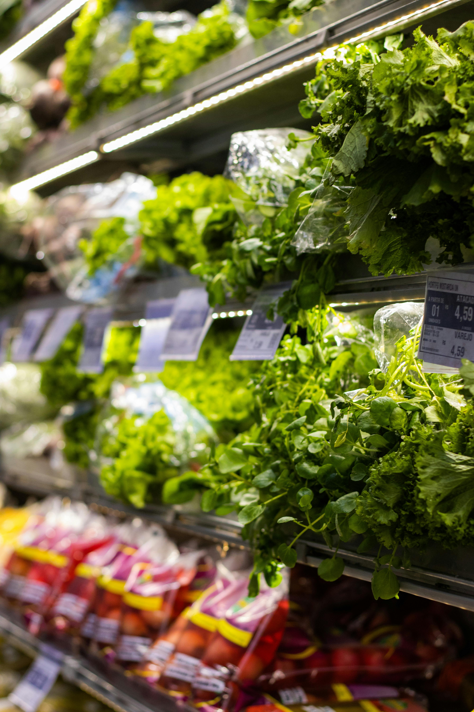

L‘ORMVAt est un établissement public,
créé par Décret n° 828-66 du 7 Rajeb 1386 (22 Octobre 1966)
et placé sous la tutelle du Ministère de l’Agriculture,
de la Pêche Maritime, du Développement Rural et des Eaux et Forêts
.
- ➺infrastructures agro-industruelles .
- ➺organisations professionnelles .
- ➺aménagement des perimetres de PMH.
- ➺filiéres agrocoles principales.
